Computadores - Armazenando História
Dos primódios do Hardware até 1950
O computador tem uma grande história, desde os primórdios da humanidade computar, que vem de contar ou calcular, foi algo que sempre chamou a atenção do homem.
Os exemplos até chegarmos onde estamos são vastos podemos citar o ábaco, a régua de cálculo e as primeiras calculadoras de bolso como algumas das ferramentas primitivas da informática moderna.
Sem dúvida a primeira e a segunda guerra mundial foram grandes catalisadores, para o avanço tecnológico, inclusive dos computadores, pode-se citar aquele considerado o pai da computação, Allan Turing e também John Mauchly e J. Eckert criadores do ENIAC que são algumas das mentes que deram base ao formato do computador atual. Entretanto vamos focar um pouquinho nos pilares centrais das três primeiras gerações: a válvula de vácuo, o transistor e os circuitos integrados.
A Era da válvula na década de 1950 (primeira geração)
A primeira geração de computadores, marcou a década de 50 com máquinas imensas que chegavam a ocupar salas inteiras, sua função era basicamente a realização de cálculos matemáticos, armazenando os dados através da perfuração de cartões, isso até 1957 onde tal estrutura foi substituída pelas fitas magnéticas que eram mais eficazes.
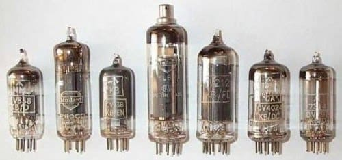Sua estrutura era impulsionada por um mecanismo de válvulas a vácuo que consumiam muita energia e produziam muito calor, tinham formato de lâmpada e pelo trabalho constante queimavam facilmente.
A linguagem presente era a de máquina e também é válido citar que em 14 de julho de 1951 vimos os primeiros passos da era comercial do computador, através da venda do UNIVAC (Universal Automatic computer) adquirido pelo governo americano para a tabulação dos dados do censo do ano anterior, o que já era uma mudança significativa visto que anteriormente seus fins eram exclusivamente no campo militar.
Navegando na onda dos transistores de 1959 a 1964 (segunda geração)
Na década de 60 uma nova tecnologia iria revolucionar novamente a maneira que os computadores funcionavam, o transistor foi um dispositivo que agilizou e aumentou a gama de sinais elétricos que eram transferidos.
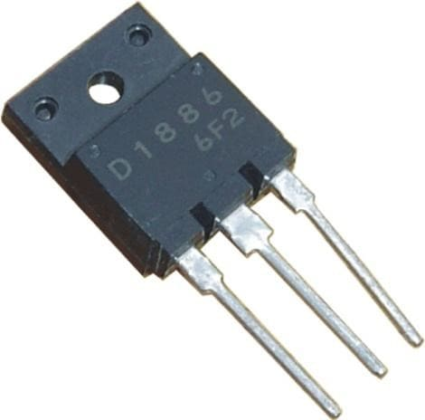Diferente das válvulas de vácuo da primeira geração os transistores não exigiam pré-aquecimento, esquentavam menos durante o funcionamento da máquina e consumiam bem menos energia. Naquela época o acesso ainda continuava restrito apenas grandes universidades e organizações do governo tinham acesso a essas máquinas.
Desta vez foi abandonado a linguagem de máquina nesses computadores e implementada a linguagem Assembly, tornando a programação menos maçante. Também vale citar linguagens que vieram posteriormente como FORTRAN e COBOL, mas para não perder o foco no tema, voltemos aos computadores.
O marco dos circuitos integrados 1965-1970 (terceira geração)
Os circuitos integrados foram um verdadeiro marco da terceira geração computacional, tratava-se de um pequeno chip composto principalmente por silício, que começou a substituir os transistores em 1965.
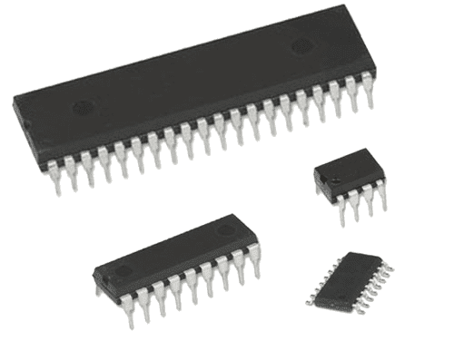A vantagem dessa nova tecnologia era a maior confiabilidade, portabilidade e definitivamente um custo muito menor se comparado aos transistores e válvulas. Pode-se dizer também que foi nessa época que vimos uma difusão no hardware, agora os computadores estavam começando a se direcionar também ao uso empresarial tanto como para o científico.
A série IBM 360 foi destaque nesse ramo, a comercialização como dito anteriormente era o novo foco do momento, vale dizer ainda que foi neste período que o software começou a ser vendido a parte do hardware. Mas você deve estar se perguntando, quando o computador finalmente chegou nas mãos do usuário? Bom, isso é o que veremos na próxima geração.
Como foi os primeiros computadores da década de 70 à 90? (quarta geração)
Década de 70
Nas décadas de 1970 foram criados os primeiros computadores a vir com o monitor integrado vindo também com o mouse, em 1973 a xerox criou seu primeiro computador com sistema operacional baseado em interface gráfica chamando ele de Xerox Alto
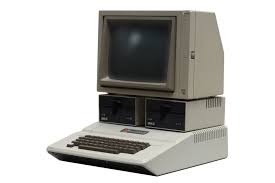A IBM não ficou atrás trazendo logo os computadores portáteis com tela e leitor de fitas, o IBM 5100 de 1975. Em seguida a Apple chega com seu design bem rústico diferenciado dos demais, mas ela vem forte mesmo com seu modelo apple ll vindo com novas cores e mudando o mercado ao seu favor um dos grandes avanços foi a implementação de novo upgrade nesses computadores.
Suas capacidades não passavam de simplesmente 256 bytes de memória e usava interruptores de luz para operar; esses computadores mais rústicos só a população de alto escalão usava eles para usar como extravagância geralmente nessa época essas máquinas tem o preço não era para pessoas de baixa renda, essas máquinas foram fabricadas para melhorar na indústrias em ritmo alarmante de tempo facilitando o trabalho cada vez mais Mesmo tendo sido criados para uso comercial na década de 60, foi só há cerca de 20 anos que a revolução da computação ganhou corpo, fazendo com que os computadores de grande porte começassem a ser usados massivamente pelas empresas. Foi também nessa época que se tornou comum o uso dos computadores domésticos.
Década de 80
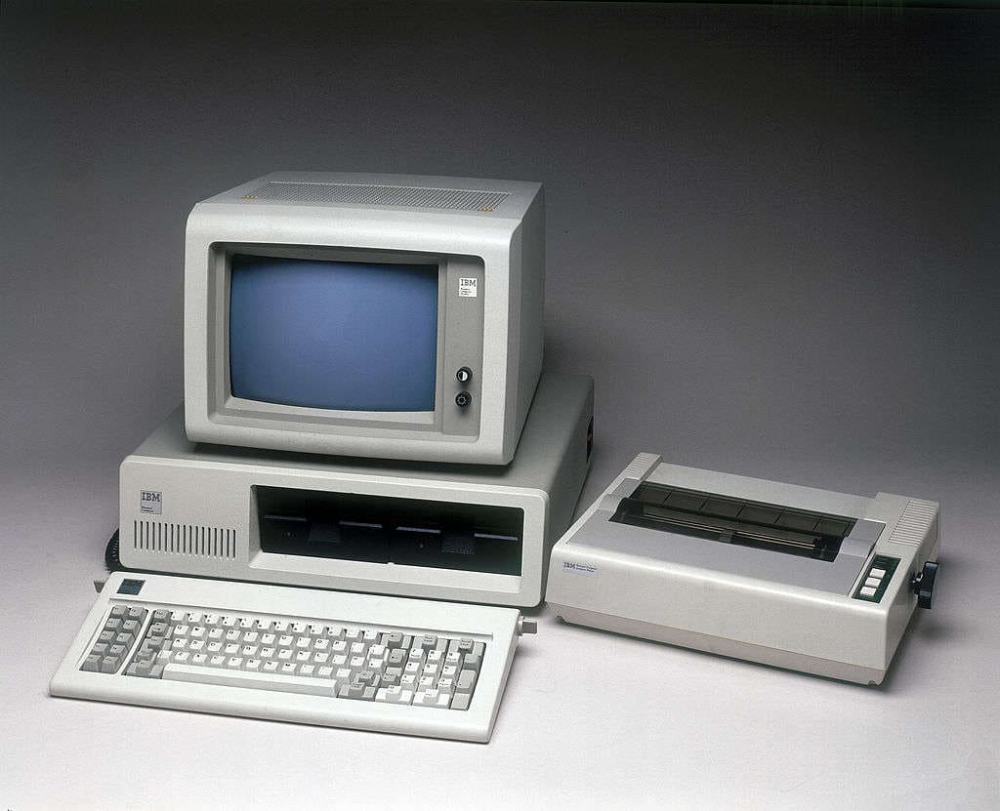Passando a evolução parando na década de 80 computadores pessoais finalmente começaram a atingir um nível de desenvolvimento suficiente para permitir o uso de aplicativos sérios. Surgiram então os primeiros aplicativos de processamento de texto, planilhas, e até mesmo programas de editoração e desenho, Depois dos Apple I e Apple Sie outros computadores de 8 bits, chegamos finalmente à era PC.
A IBM de 1980 era uma empresa de grande porte que foi especializada em mainframes, começaram a idealizar o projeto IBM PC. Depois de quase um ano de desenvolvimento, o primeiro PC foi lançado em 12 de agosto de 1981, sendo usado apenas componentes padrão sendo achado facilmente em qualquer mercado, o processador escolhido foi o Intel 8088, uma versão econômica do processador 8086, que havia sido lançado pela Intel em 1978.
Década de 90
Nos anos 90 também foram conhecidos por serem lento e sem resposta sob o MS -DOS (Sistema Operacional Disc). Em 1995, Bill Gates e a Microsoft Corporation lançaram o Windows 95, que passou a se tornar um dos sistemas operacionais mais populares já produzidos. O Windows 95 deu aos usuários de computador a capacidade de ter nomes de arquivos longos para os dados importantes, onde eles anteriormente haviam sido restritos a oito caracteres. Após este enorme sucesso, a Microsoft passou a lançar o Windows 98 em 1998.
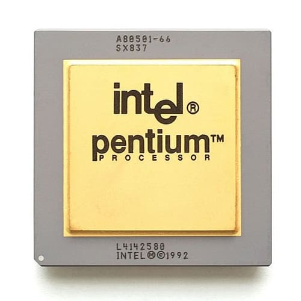Em outro esforço para tornar os computadores dos anos 90 mais rápido e eficiente, a Intel desenvolveu o primeiro processador Pentium, uma forma de que ainda é usado na maioria dos computadores de hoje.
Pentium lançou seu primeiro processador em 1993, o que levou a processadores mais rápidos do Pentium I, II e III. Hoje, a tecnologia permite que a maioria de nós usar o Pentium Dual Cores, que têm suas bases no boom da tecnologia dos anos 90 computadores; lançamento do iMac, em 1998, a Apple Macintosh não era um líder da indústria em tecnologia de computador.
O primeiro iMac G3 teve uma jujuba ou aparência em forma de ovo, com um monitor CRT, delimitada principalmente por uma caixa de plástico translúcido colorido. A Apple evitou usar as cores bege utilizados por outros designers de PC e focado na criação de uma identidade distinta para cada um dos seus produtos.
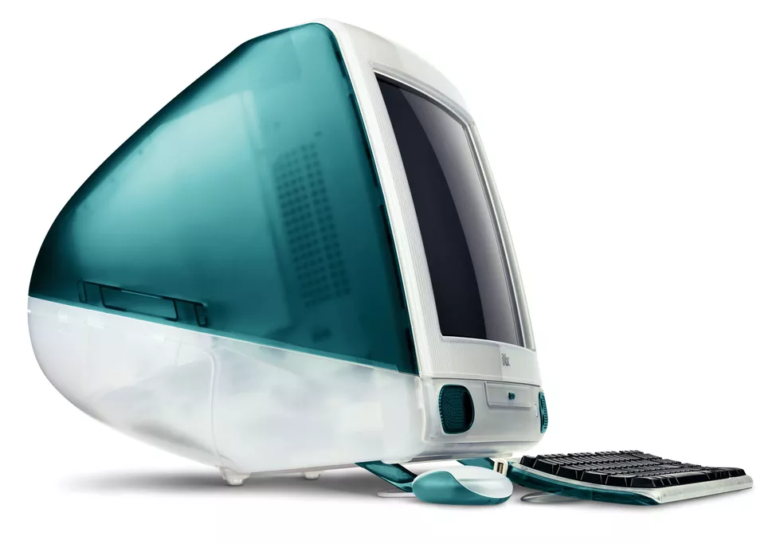O turbulento ano 2000 e o surgimento de novas tecnologias (quinta geração)
Década de 2000
Na virada do ano de 1999 para a década de 2000 já começou muito turbulenta. A causa desse medo todo foi que os computadores dessa década não entendessem essa mudança. Isso pelo motivo de que eles usavam calendários internos com dois dígitos. Como o ano era 1999 ou então 99 em calendários de dois dígitos, depois viria 00 e os computadores entendiam como 1900 ou como 19100, e não como 2000.
Mas esse problema não foi nada demais, dado que muitos computadores da época já tinham calendários em quatro dígitos. Só alguns sites e sistemas que apresentaram a data 01/01/19100.
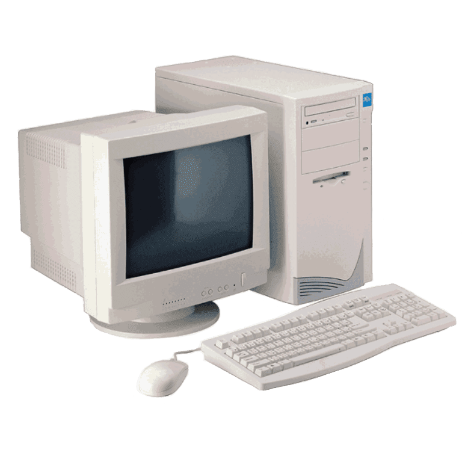Os computadores no início dessa década eram praticamente todo branco e ao longo de seu uso recebiam tons amarelados. Eles eram constituídos por um monitor de tubo, teclado, mouse com bolinha e o gabinete que suportava leitura e gravação de disquetes, CDs e DVDs. E ainda usavam processadores da década passada que eram baseados na arquitetura do Pentium Pro, como: Pentium II, III e Celerons. A capacidade de processamento era de 233 MHz a 866 MHz. Mas a AMD lançou o Athlon XP para competir com esses processadores e as velocidades variavam de 1333 a 1533 MHz.
Ao decorrer dessa década foram surgindo novas tecnologias mais compactas e com mais capacidade de processamentos, cada ano tinha algo novo. E em 2005 a Intel lançou o Pentium D que foi o primeiro processador multicore do mercado e foi evoluindo. Além disso teve a criação dos smartphones e notebooks que nos deram portabilidade e acessibilidade.
Década de 2010 e atual
Em cada década novas tecnologias foram surgindo e ficando cada vez mais barato e em 2010 não foi diferente, a Intel produziu os modelos da família core i3, i5 e i7 com quatro núcleos e os separaram em categorias como: entrada, intermediário e top de linha, e assim poderiam atender classes sociais diferentes. A AMD não ficou para trás, e no começo dessa década o processador equivalente era o Phenom II (x4, x3 e x2).
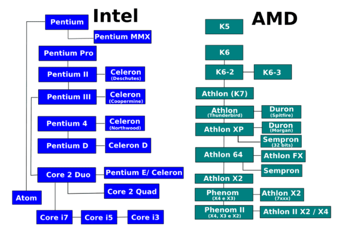E no final dessa década em 2017 a Intel introduziu o i9 e assumiu o lugar de top de linha da empresa com oito núcleos e 3.60 GHz. Nesse mesmo ano a AMD lançou o modelo ryzen 1000 que nos dias atuais são comparados com a família core como: ryzen 3, 5, 7 e 9. A nomenclatura são muitos parecidos e servem também como uma categoria. E assim como a Intel o ryzen 9 é o top de linha deles e tem 12 núcleos e 3.80 GHz.
Tecnologias Futuras
A cada ano novas tecnologias vão surgindo e cada vez mais os computadores ficam com mais armazenamento, mais rápidos e acessíveis. Mas como estão em desenvolvimento os custos de produção em então altos. Apesar disso, assim que essas tecnologias entrarem no mercado os preços podem ficar mais acessíveis.
Armazenamento em DNA:
Essa tecnologia pode substituir os discos rígidos que ainda são usados para o armazenamento de muitos dados e que ocupam muito espaço. Embora não tenha nenhuma previsão de quando essa tecnologia poderá ser usada, permitiria armazenar bancos de dados enormes em espaços minúsculos.
Computadores quânticos:
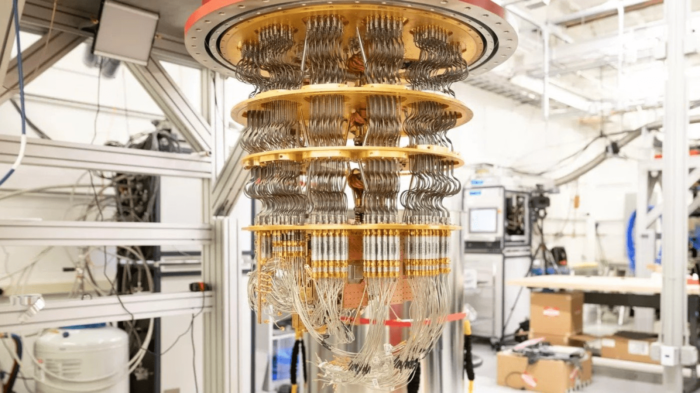Esses computadores já são uma realidade nas grandes indústrias, mas como toda nova tecnologia ela é muito inacessível para os consumidores. Enquanto o computador normal usa o bit como leitura, esse computador usa o bit quântico que podem realizar operações que levariam milhares ou milhões de anos para serem feitas pelos computadores do mercado.
Circuitos ópticos:
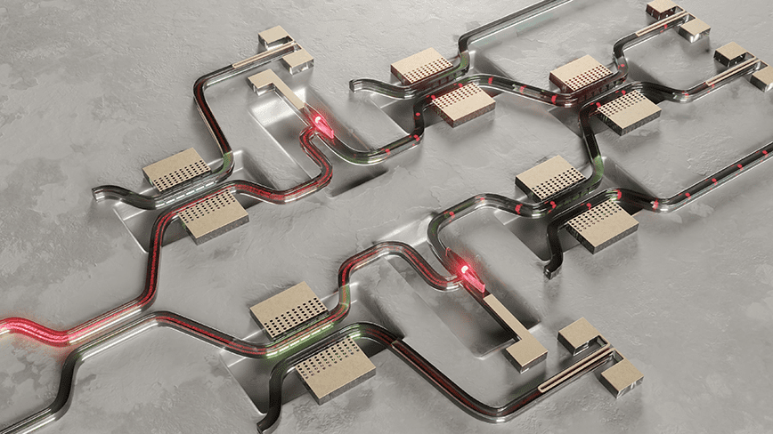Uma forma de acompanhar a velocidade dos computadores quânticos seria os circuitos ópticos, pois os computadores atuais utilizam os circuitos elétricos e geram calor excessivos que podem danificar o hardware. Mas nessa tecnologia utilizam impulsos de luz como a fibra óptica e assim tendo mais velocidade.
Em resumo os computadores vêm evoluindo dia a dia, e com isso os componentes ficam cada vez menores e com mais capacidade de processamentos. E por causa dessa evolução constante os preços ficam cada vez mais acessíveis para a maioria da população.